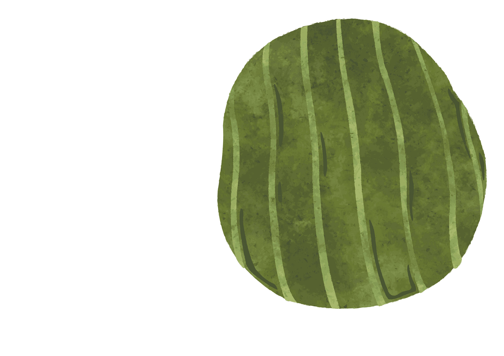
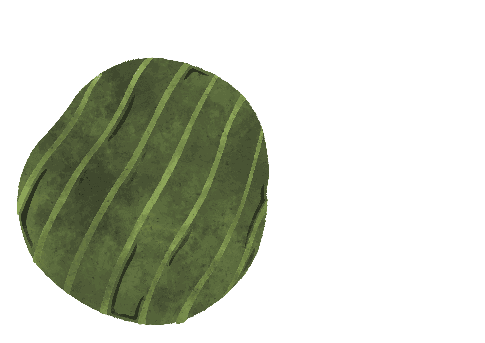
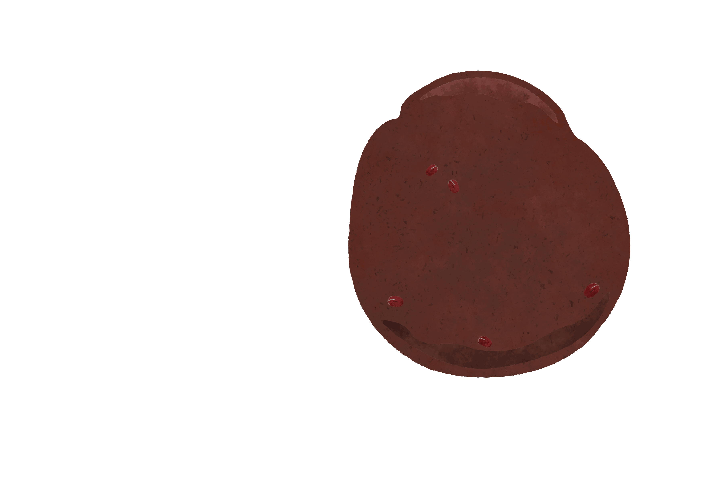
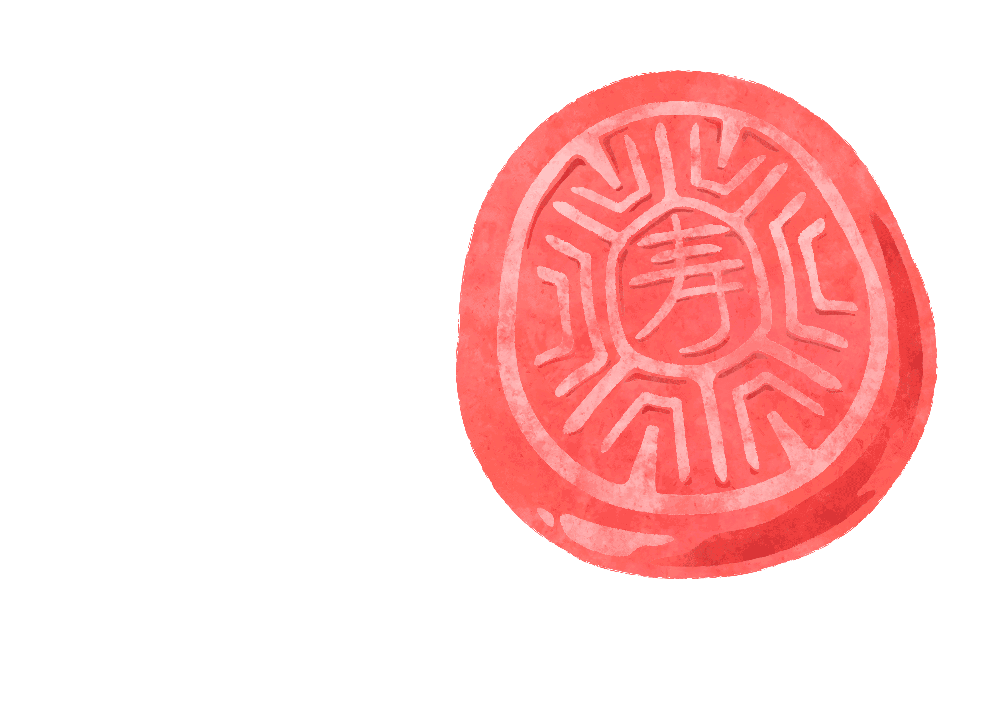
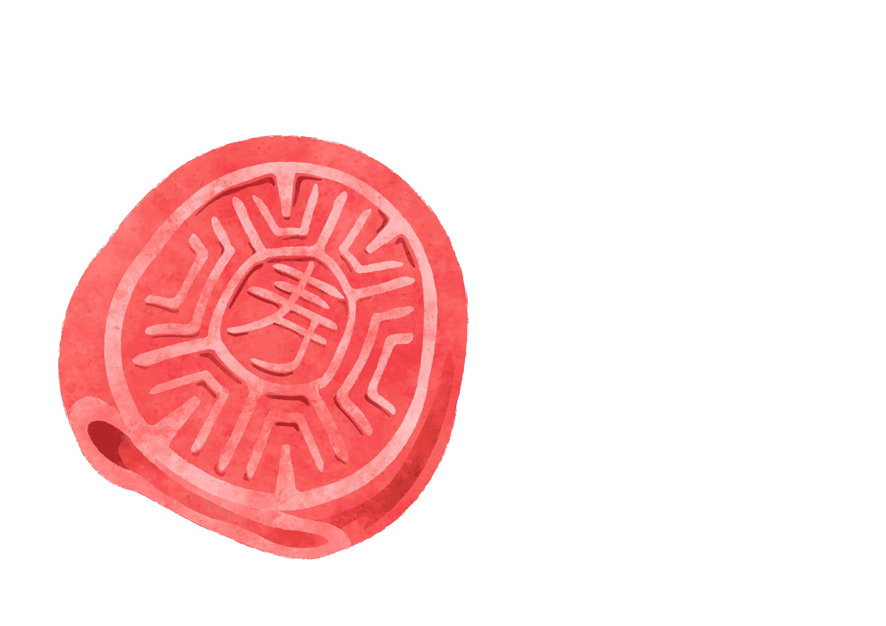

赤い亀まんじゅう
紅龜粿


台湾の祝祭日に欠かせないお供え。もち米をすり潰して作られた生地に色を付けるため、有色米を入れて着色する。それにつぶし餡を包み込む。お餅のような食感で甘く、一口食べると、餡がすぐあふれ出して最高で幸せ。
逢年過節祭拜時，不可少的祭拜品之一。糯米研磨成漿狀，加入有色米染色，捏出巴掌大小一塊，包入紅豆沙餡，吃起來口感像麻糬、甜滋滋，一口咬下是滿嘴的餡，很幸福。



────── 葉子・葉
─────── 粿皮・生地
──────── 紅豆沙・つぶし餡